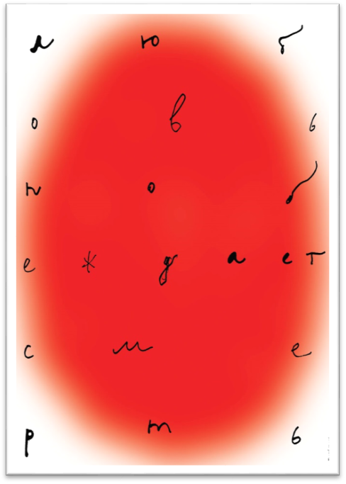
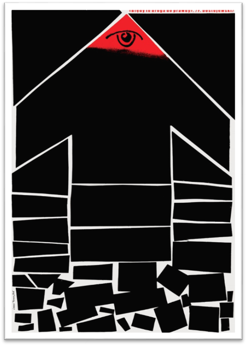
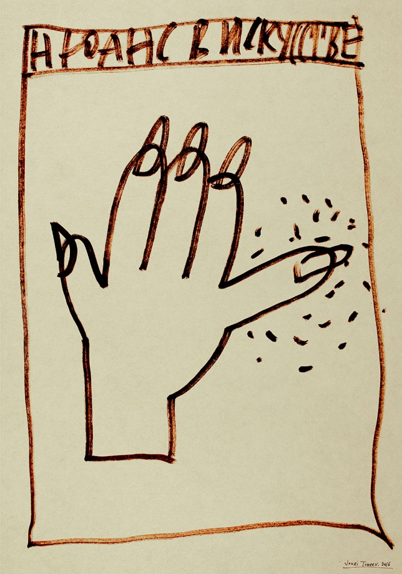

- Тащитесь, траурные клячи!
- Актёры, правьте ремесло,
- Чтобы от истины ходячей
- Всем стало больно и светло. (Ал.Блок)
Юрий Тореев – мыслящий Художник. В его работах всегда заложена своего рода народная мудрость, достойная войти в сокровищницу «философии жизни». На плакатах Ю.Т. изображение обычно сопровождается надписью, причём то и другое могут не совпадать по смыслу. В этом – интрига и дидактическая ценность плаката. Он заставляет зрителя задуматься – в чём же истина? И если это произойдёт, если зритель дополнит своими размышлениями замысел Художника – значит, произведение искусства выполнило свою гражданскую и общечеловеческую миссию. Значит, Художник работал недаром.
«Любовь побеждает смерть» (Ф.М.Достоевский)
Подобную мысль выражали и Шекспир, и Гете, и многие другие. Но содержит ли эта фраза истину? Мы твёрдо знаем, что «всё живое обречено смерти». Эта истина не нуждается в доказательствах. Да они и не нужны: рисунок и текст на плакате достаточно убедительно опровергают мысль Ф.М.Достоевского.
Большое красное яйцо, символизирующее любовь, не имеет контура. Это нечто призрачное и иллюзорное – не то капля влаги, не то луч цветного фонаря. К тому же, форма яйца нестабильна, в отличие от шара. Всякому яйцу суждено быть разбитым рано или поздно – точно так же, как и всякой любви приходит конец.
Эта истина подтверждается также надписью на плакате: мелкие буквы (курсив) рассыпаны по полю, как отверстия в решете. Такое решето не защитит вас от дождя, а россыпь мелких букв не убедит в истинности выраженной в них мысли.
Впрочем, затронутые здесь проблемы полезно обдумать заново всякому homo sapiens.
«Минус на минус»

В мои школьные годы нередко приходилось слышать от одноклассников такую сентенцию: «Минус на минус даёт плюс». Это говорилось по поводу какой-либо ошибки, неудачи, или промаха в работе; такой фразой пытались восстановить душевное равновесие после неприятного события и внушить самому себе надежду на лучшее.
Автор плаката визуализировал эту популярную формулу: надпись образует знак плюс. Как будто всё хорошо. Но ведь плюс – это в то же время и крест. А крест – великий и многозначный символ.
- Это знак конца (поставить крест на этом деле).
- Знак тяжёлой непосильной ноши (Иисус не мог нести крест к месту своей казни; ему помогли).
- Знак проклятия, обречённости («Я несу свой крест»).
- Знак смерти (на могиле).
- Знак принадлежности к христианской вере (религии).
Может ли такой многозначный и освящённый символ (крест) состоять из знаков отрицания (минусов)? Здесь Художник на наших глазах перерастает в мудреца, задающего неразрешимые загадки своим ученикам (подобно учителям дзэн-буддизма).
Попробуем и мы свои силы в этом нелёгком деле…
«Ошибки – путь к истине» (Ф.М.Достоевский)
Ещё один парадокс из того же источника. По существу, здесь высказана мысль, аналогичная той, которую мы рассмотрели в предыдущем фрагменте. Здесь гарантом истинности служит «недрёманное око», ведущее человека прямо в рай (на небо), после того, как он (человек) совершил множество ошибок.
В этом плакате, так же, как и в других работах (якобы) нравоучительного характера, скрыт элемент юмора. Стрелка, изображённая здесь, не продвинется вверх ни на один микрон: она прочно уперлась своей «головой» и «руками» в раму плаката. А если сдвинется – рассыплется на мелкие кусочки, символизирующие «ошибки». В результате – что долетит до небес? Что угодно – но только не вы с вашими ошибками.
Нюанс в искусстве
Мысль плаката прочитывается так: если не уделять должного внимания нюансам в Вашем произведении – они испортят всю картину (всё остальное). Мизинец на этой дамской руке, будучи неправильно обработан, изуродовал руку. То же относится к надписи на плакате и к рамке. Это сделано нарочито небрежно и неаккуратно, чтобы продемонстрировать важность внимания ко всем элементам работы (плаката), вплоть до простой рамки.
Л. Миронова,
25.03.2018